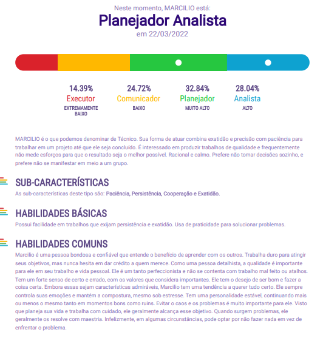

Profiler
COMUNICADORES
- Sua ênfase está em influenciar,
- Estimular e agregar pessoas;
- Importante para ele: fazer diferente;
- Valoriza: as relações interpessoais, o
convívio social. O outro como apoio;
- Busca resultados através de prestígio,
persuasão e incentivo.
Principais Medos:
- Ficar sozinho;
- Não se sentir apoiado, ser criticado;
- Perder o prazer nas coisas;
- Dizer não;
- Não chamar a atenção;
- Ter que focar em algo.
EXECUTORES
- Sua ênfase está em superar obstáculos e alcançar resultados;
- Importante para ele: fazer e rápido (com objetividade);
- Valoriza: desafios, resultados atingidos, autonomia;
- Busca resultados através de domínio e
poder.
Principais Medos:
- Perder a autonomia e a independência;
- Perder a posição para outra pessoa;
- Falhar, não dar conta;
- Ter que submeter-se;
- Ter que detalhar, conferir, controlar.
PLANEJADORES
- Sua ênfase está em cooperar com o outro;
- Importante para ele: fazer junto, ajudar;
- Valoriza: a ordem, o relacionamento e o apoio ao outro;
- Busca resultados através da persistência, continuidade, organização e dedicação.
Principais Medos:
- Da opinião dos outros;
- De perder o autocontrole;
- Do novo;
- De perder a confiança do outro, de magoar, de conflito;
- De não poder contribuir, colaborar.
ANALISTAS
- Sua ênfase está em desenvolver tarefas
com precisão e qualidade;
- Importante para ele: fazer certo sempre, buscar segurança, especializar-se;
- Valoriza: o detalhe, as coisas, o processo;
- Busca resultados através de controle e
exatidão
Principais Medos:
- Medo de confronto;
- Medo de não ter pensado em todas as possibilidades;
- Medo de fazer errado;
- Medo de ser chamado a atenção;
- Medo de não ser respeitado.
Meu Profiler

Voltar para a página inicial